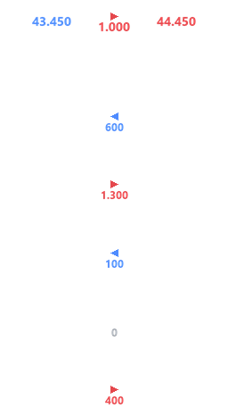

Números do overlay
Imagem produzida pelo mesmo desenho do executável. Segoe UI, cores e posições preservadas; linhas em 12 px e totais em 14 px.
Tamanho real · referência 1920 × 1080

Azul: vantagem do seu time.
Vermelho: vantagem do adversário. Cinza: empate.
Detalhe ampliado · 3×
Ampliação só para conferir a suavização.
No jogo, o tamanho é o da coluna ao lado.
Valores de demonstração. A coluna está isolada sobre o fundo do SEXO2; no jogo, o fundo é transparente e o placar aparece atrás. Para avaliar o tamanho real, use o navegador em 100%.